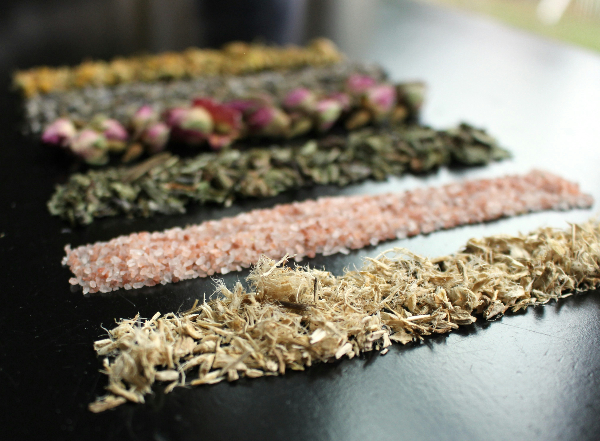

About Herbs Connect

Herbs Connect is a small herbal wellness business inspired by traditional knowledge and the long history of using natural herbs as part of everyday wellness practices.
Our Story
Herbs Connect started from a simple interest in traditional herbal practices and the knowledge shared between generations. The idea was to create a small business where people could discover herbal products while also learning more about the traditions connected to them.
As modern lifestyles become busier, some traditional practices can become less familiar to younger generations. Herbs Connect aims to create a connection between this traditional knowledge and people who want to explore herbal wellness products today.
Our Mission
Our mission is to provide accessible herbal wellness products while presenting information about them in a simple and responsible way. We aim to respect traditional knowledge while encouraging customers to make informed decisions about their wellbeing.
Our Vision
Our vision is to become a trusted local herbal wellness business that connects traditional practices with modern customers through quality products, useful information and good customer service.
Our Values
- Respect for traditional knowledge
- Responsible communication
- Customer care
- Quality and consistency
- Honesty and transparency
Who We Serve
Herbs Connect is aimed at adults who are interested in traditional herbal practices, natural wellness products and learning more about the role of herbs in traditional cultures.
The website is designed to make information easy to understand for both people who already have an interest in herbs and visitors who are discovering them for the first time.
Explore Our Products
Visit our products page to learn more about the herbal products available from Herbs Connect.
View Our Products